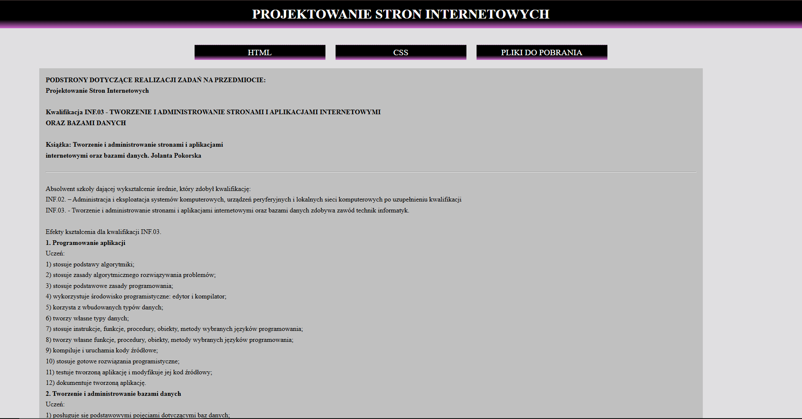
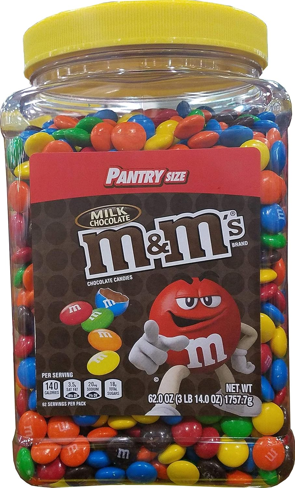
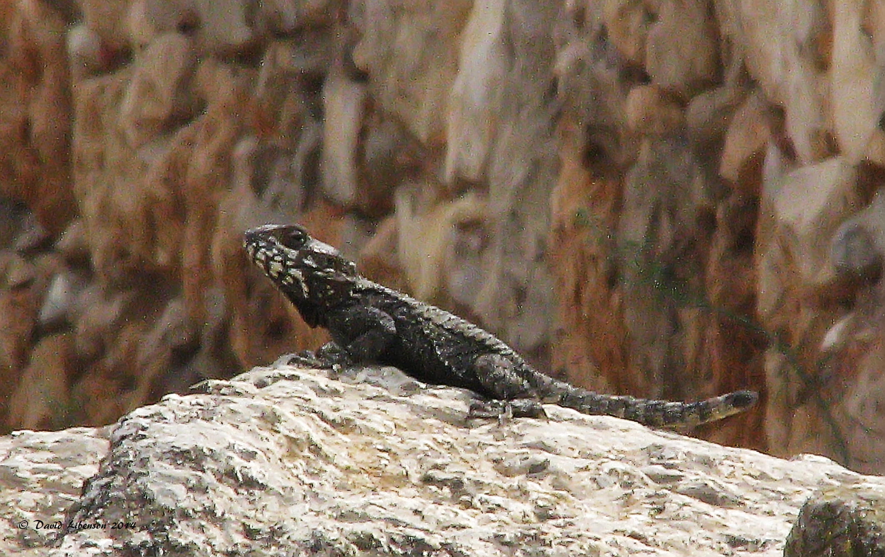
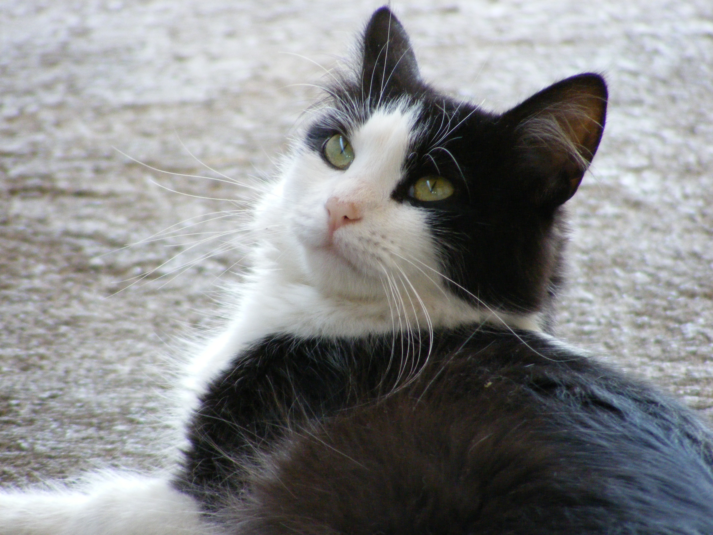

<!DOCTYPE html>
<html lang="pl-PL">
<head>
		<title>Strona Szymona - Projektowanie Stron Internetowych </title>
		<meta charset="UTF-8">
</head>
</html>
	<div style="background-color:grey;">
		<h1><center>Projektowanie Stron Internetowych - Szymon Choroba</center></h1>
	</div>
	<div style="float:left; width:30%; height:550px;">
		<h3>HTML</h3>
			<a href="index.html">STRONA GŁÓWNA</a><br />
			<a href="kolory.html">KOLORY</a><br />
			<a href="nauczyciele.html">NAUCZYCIELE</a><br />
			<a href="zdjęcia.html">ZDJĘCIA</a><br />
			<a href="tabela.html">TABELA</a><br />
			<a href="Tabela_Choroba.html">TABELA NA OCENĘ</a><br />
			<a href="listy.html">LISTY</a><br />
			<a href="lista_na_ocene.html">LISTY NA OCENĘ</a><br />
			<a href="formularz.html">FORMULARZ</a><br />
		<h3>CSS</h3>
		<br />
		<h3>DOKUMENTY</h3>
		<BR />
		<a href="doc/2cgrupaI.docx" target="new"> Lista grupy 1 </a>
		<br />
		<a href="doc/wydatki2cgrI.xlsx" target="new"> Wydatki gr1 </a>
		<br />
		<h3>LINKI</h3>
		<br />
		<a href="http://www.google.com" target="new"> </a>
		<br />
		<br />
		<a href="https://tsi-pai.cba.pl/" target="new"> </a>
		<h3>MULTIMEDIA</h3>
		<a href="multi.html">tAK</a><br />
		<br />
		<br />
</div>
<div style="float:right;width:70%;">
    Czekolada pitna - ziarna kakaowca są poddawane fermentacji, suszone, a następnie oczyszczane i prażone. 
	Następnie miażdży się ich skorupki i odsiewa je oraz usuwa zarodki. Z pokruszonych ziaren wydobywa się tłuszcz 
	za pomocą wyciskania, wyżymania lub rozpuszczalnika. Pozostaje sucha substancja, tzw. makuchy. 
	Zostają one rozdrobnione i wysuszone w temperaturze 20 stopni Celcjusza. 
	
	 Następnie przerabia się je na proszek i przesiewa. Otrzymany ciemny, 
	
	 aromatyczny proszek mieszany jest z cukrem i otrzymuje się czekoladę w proszku.
	<br />
	Czekolada twarda - pokruszoną śrutę kakaową miele się w wysokiej temperaturze. 
	Powstaje masa zwana likierem czekoladowym. Miesza się ją i rozgniata, aż powstanie miałka i tłusta substancja, 
	puszysta, o aksamitnej gładkości. Poddawana jest ona konszowaniu - mieszaniu i rozcieraniu na sucho. 
	Dzięki temu staje się bardziej plastyczna, zmniejsza się jej wilgotność i znikają resztki kwasowości. 
	Pod koniec procesu konszowania dodaje się masło kakaowe i ewentualnie lecytynę. 
	Cały czas masa jest łagodnie podgrzewana do odpowiedniej temperatury (80-85 stopni dla czekolady gorzkiej, 
	55-60 stopni dla czekolady mlecznej). Następnie czekoladę się powoli schładza, 
	aby tłuszcz kakaowy jednolicie się skrystalizował. Odpowiednio schłodzona (ale płynna)
	masa jest wlewana do form. W tunelu chłodniczym, w temperaturze około 6-7 stopni czekolada stygnie i krzepnie, 
	kurcząc się w formach. Ostatnim etapem produkcji jest wybicie tabliczek z form i zapakowanie. 
	<br />
	
	 
	Czekolada pitna - ziarna kakaowca są poddawane fermentacji, suszone, a następnie oczyszczane i prażone. 
	Następnie miażdży się ich skorupki i odsiewa je oraz usuwa zarodki. Z pokruszonych ziaren wydobywa się tłuszcz 
	za pomocą wyciskania, wyżymania lub rozpuszczalnika. Pozostaje sucha substancja, tzw. makuchy. 
	Zostają one rozdrobnione i wysuszone w temperaturze 20 stopni Celcjusza. 
	Następnie przerabia się je na proszek i przesiewa. Otrzymany ciemny, 
	aromatyczny proszek mieszany jest z cukrem i otrzymuje się czekoladę w proszku.
	<br>
	
	 
    Czekolada twarda - pokruszoną śrutę kakaową miele się w wysokiej temperaturze. 
	Powstaje masa zwana likierem czekoladowym. Miesza się ją i rozgniata, aż powstanie miałka i tłusta substancja, 
	puszysta, o aksamitnej gładkości. Poddawana jest ona konszowaniu - mieszaniu i rozcieraniu na sucho. 
	Dzięki temu staje się bardziej plastyczna, zmniejsza się jej wilgotność i znikają resztki kwasowości. 
	Pod koniec procesu konszowania dodaje się masło kakaowe i ewentualnie lecytynę. 
	
	 Cały czas masa jest łagodnie podgrzewana do odpowiedniej temperatury (80-85 stopni dla czekolady gorzkiej, 
	55-60 stopni dla czekolady mlecznej). Następnie czekoladę się powoli schładza, 
	aby tłuszcz kakaowy jednolicie się skrystalizował. Odpowiednio schłodzona (ale płynna)
	masa jest wlewana do form. W tunelu chłodniczym, w temperaturze około 6-7 stopni czekolada stygnie i krzepnie, 
	kurcząc się w formach. Ostatnim etapem produkcji jest wybicie tabliczek z form i zapakowanie. 
	<br /><br />
	<hr>
	<br /><br />
	
	
		<br /><br />
	<hr>
	<br /><br />
	-VIDEO-
	<br /><br />
	<video src="video/video.mp4" height="300px" controls poster="foty/sigma.jpg">Film
	<source src="video/video.webm" type="video/webm" />
	<source src="video/video.ogg" type="video/ogg" />
	
	</video>
	<br />
	<br />
	-AUDIO-
	<br /><br />
	<audio src="audio/audio.mp3" controls>Audio
	<source src="audio/audio.wav" type="audio/wav" />
	<source src="audio/audio.ogg" type="audio/ogg" />
	</audio>
	<br />
	<br />
	-Youtube-
	<br /><br />
	<iframe width="420" height="345" src="https://www.youtube.com/watch?v=AtPrjYp75uA"></iframe>
	
</div>
	<div style="background-color:grey; clear:both;"><center> &copy; S.C., November 2024
	</center></div>
</body>
</html>
